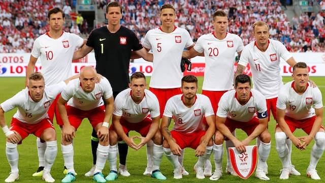

A Seleção da Polonia Participou nos anos: 1938, 1974, 1978, 1982, 1986, 2002, 2006 e 2018. Em 2022 Fará sua 9° participação na edição que será no Qatar.
Copa do Mundo: terceiro lugar em 1974 e 1982;
Olimpíadas: medalha de prata em 1976 e 1992.
| Data/Hora | Estádio | Adversário |
|---|---|---|
| 22 nov 2022 / 13h00 | Estádio 974 (Estádio Ras Abu Aboud) | México |
| 26 nov 2022 / 10h00 | Estádio da Cidade da Educação | Arábia Saudita |
| 30 nov 2022 / 16h00 | Estádio 974 (Estádio Ras Abu Aboud) | Argentina |